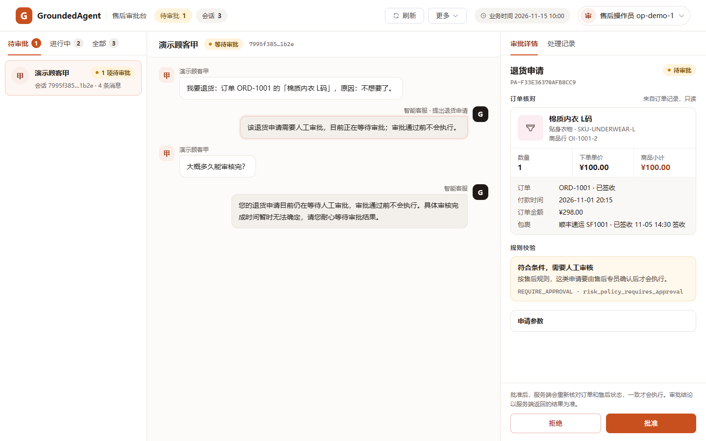

侯俊安
现在 · 杭州 · AI 应用开发实习中
动手去做。 探索想法。 持续学习。
我喜欢把想法变成软件，也喜欢探索技术背后的原理。这里是我的个人空间：记录我构建的项目、进行的实验、阅读后的思考，以及不断变化的想法。
02 精选项目
我做过的东西
代表项目 · AI Agent进行中
GroundedAgent
电商售后智能 Agent，从工具调用到幂等执行、人工审批与崩溃恢复。模型只负责提出动作，后端校验参数来源、用确定性规则决定放行；退货需要人工审批，批准后重新检查再写入。
21/25封存集端到端
25/25硬性安全约束
9崩溃恢复场景

03 正在探索
最近在想的事
04 最新文章
最近写的
打个招呼
一起聊聊？
想聊 Agent 工程、后端可靠性、做产品的想法，或者只是打一场球，都欢迎给我发邮件。